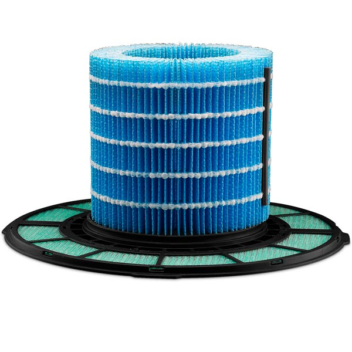
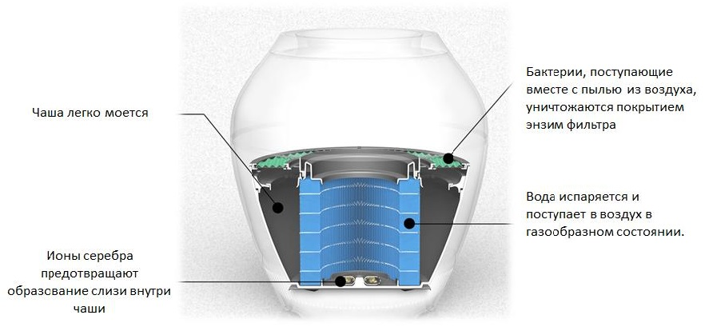
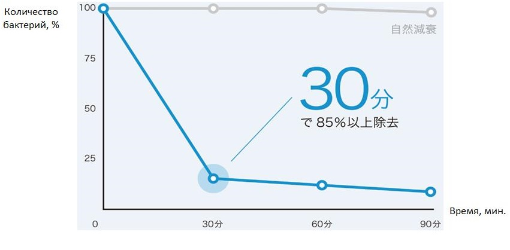
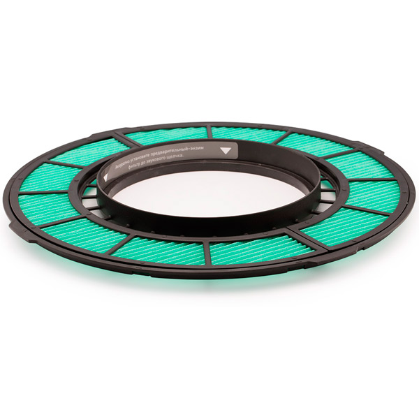

Набор фильтров A8F1
Очиститель воздуха Bork A802 Rain не просто очищает воздух, но еще и обеспечивает увлажнение очищенного воздуха, тем самым являясь еще и неплохим увлажнителем. Однако устройству для работы на должном уровне эффективности необходима своевременная замена фильтров.Набор фильтров Bork A8F1 был разработан специально для модели A802 и состоит из нескольких фильтров. В набор входят предварительный-энзим фильтр и увлажняющий фильтр. Предварительный энзим-фильтр способствует уничтожению плесени, вирусов и бактерий, а увлажняющий фильтр необходим для лучшего увлажнения воздуха.
Очистка осуществляется в несколько этапов
1. Ионы серебра предотвращают образование слизи внутри чаши.
2. Энзим фильтр очищает воздух от пыли и бактерий.
3. За счет естественного испарения на выходе получаем чистый и увлажненный воздух.
Характеристики
Тип фильтра увлажняющий
Совместимость: Bork A802 Rain
Комплектация: фильтр увлажнения и предварительный-энзим фильтр
Модель товара A8F1
Гарантия 1 год
Страна-производитель Китай
Система предназначена для эффективной работы воздухоочистителя-увлажнителя А802 Rain в течение 6 месяцев.